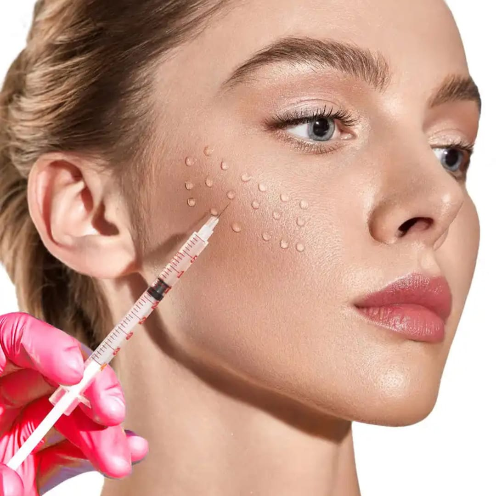
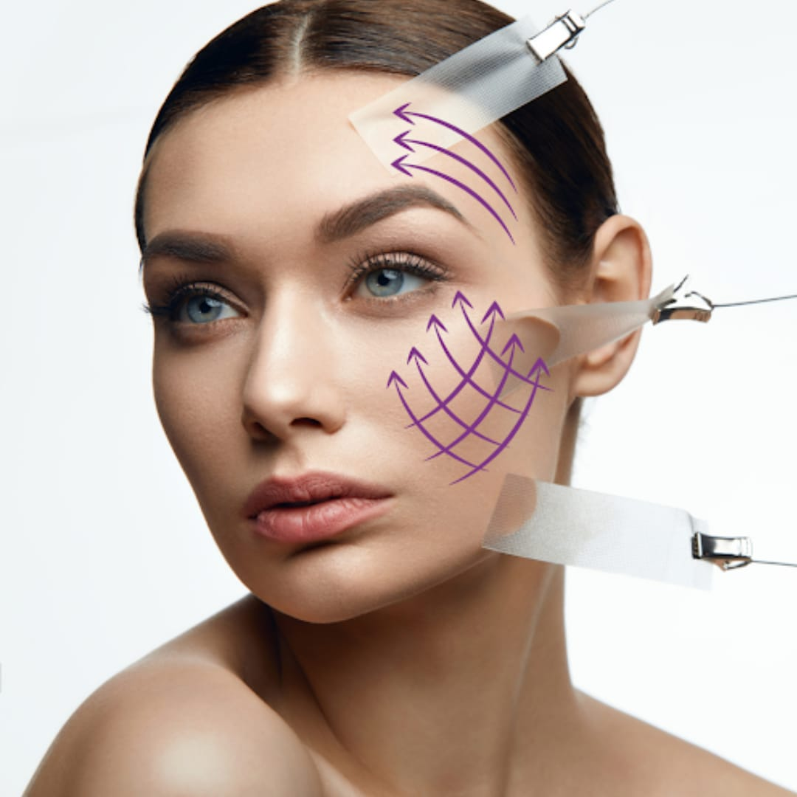
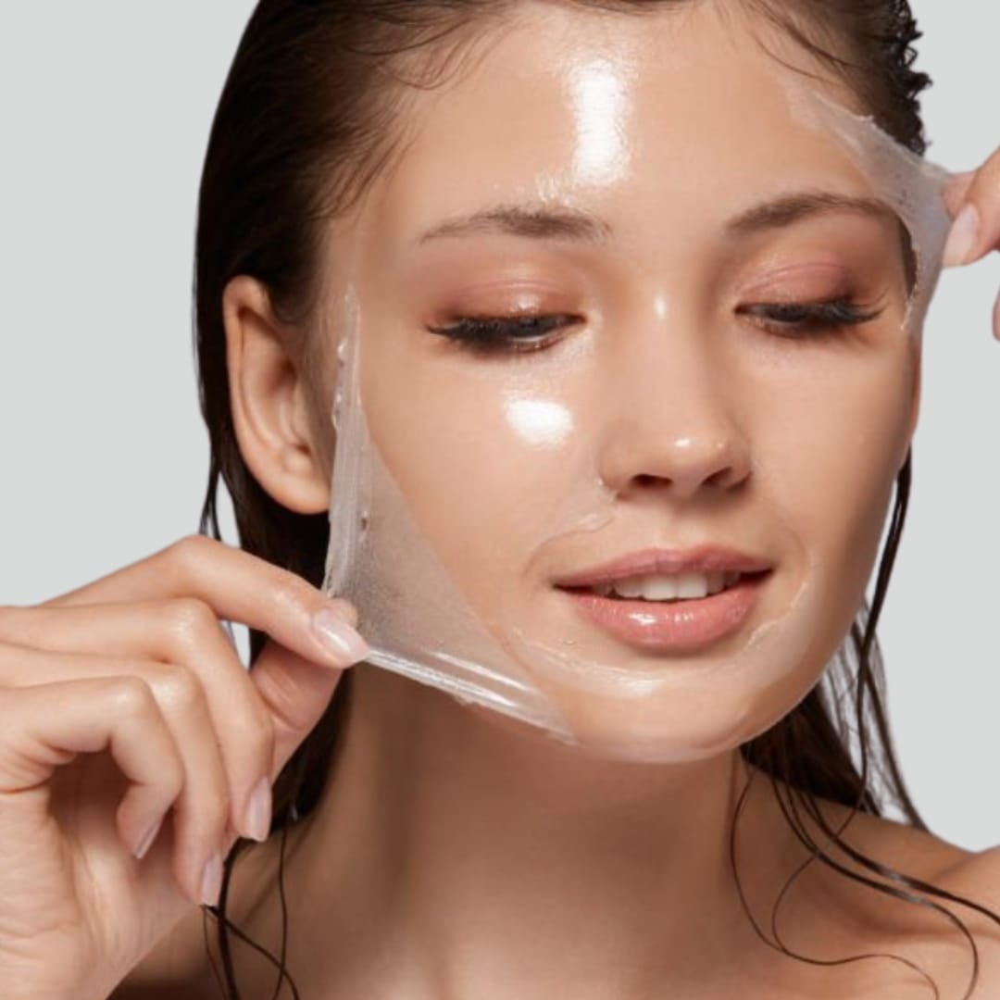
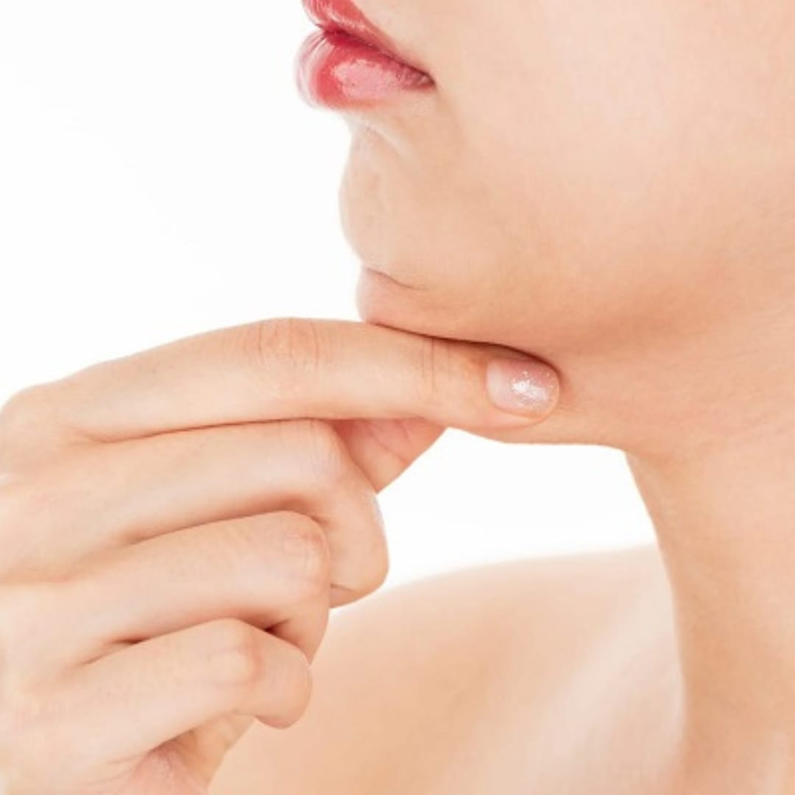
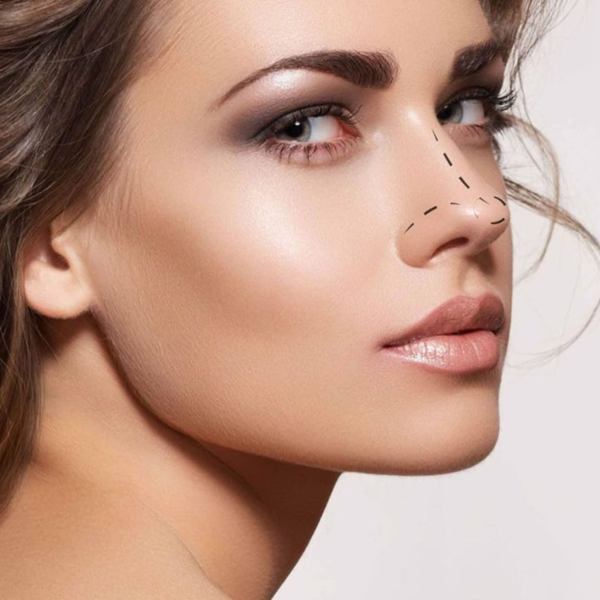
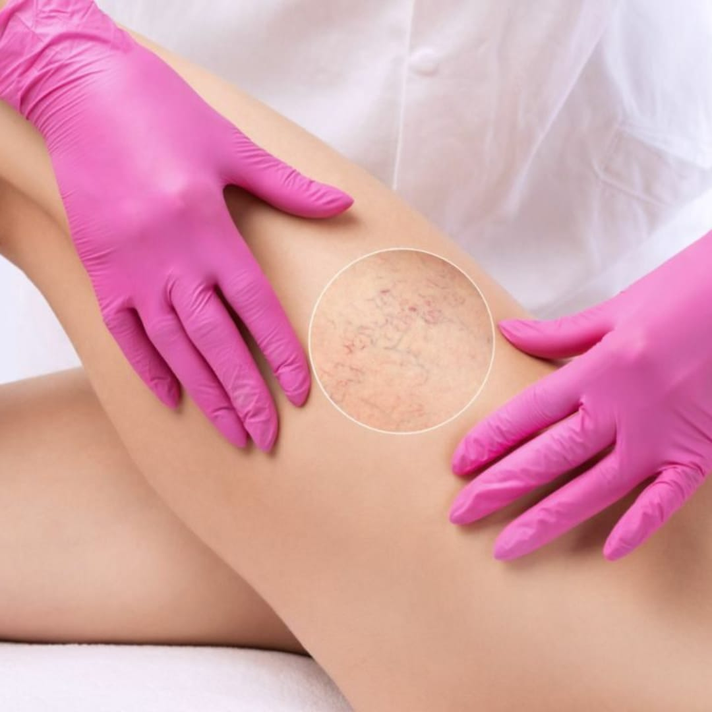

PROCEDIMENTOS

Toxina Botulínica (Botox): trata rugas dinâmicas e estáticas, principalmente de testa, glabela e orbicular dos olhos.
Botox

Bioestimulador de Colágeno: trata flacidez tissular, devolvendo espessura dérmica, lifting e iluminação.
Bioestimulador de Colágeno

Preenchimento Labial: volumisa, contorna e hidrata profundamente os lábios.
Preenchimento Labial

Harmonização de Glúteos: preenchimento com ácido hialurônico, para corrigir depressões, conferir volume e contorno para os glúteos.
Harmonização de Glúteos

Skinbooster: hidratação profunda da derme, devolvendo nutrientes e mineiras importantes para a pele.
Skinbooster

Fios de PDO: estimula a produção de colágeno, lifting e trata rugas, principalmente periocular e peribucal.
Fios de PDO
Limpeza de Pele: limpeza profunda da pele, desobstrui poros, acne, miliuns e renovação celular.
Limpeza de Pele

Peeling Químico: tratamento que auxilia na melhora de manchas, melasma, acne ativa e rejuvenescimento.
Peeling Químico

Lipo de Papada: elimina a gordura submentoniana, deixando a mandíbula mais harmônica.
Lipo de Papada

Rinomodelação: tem por objetivo corrigir pequenas imperfeições nasais, com ácido hialurônico.
Rinomodelação

PEIM (Procedimento Estético Injetável para Microvasos): elimina microvasos indesejáveis, auxiliando na melhora da circulação sanguínea.
PEIM
Intradermoterapia: uma gama de procedimentos minimamente invasivos, que trabalham, gordura localizada, emagrecimento, estrias, celulite, entre outros.
Intradermoterapia
Tratamento para Hiperidrose: através da toxina botulínica, em pontos específicos das axilas, eliminase o suor excessivo.
Tratamento para Hiperidrose